Обзор
Передаются все действия, события и параметры проекта. к выбранному промежуточному программному обеспечению аудио использование элементов управления аудиосистемой, которые привязаны к одному (или нескольким) элементам управления.Я внутри ваше промежуточное программное обеспечение.
Соединение между элементами управления аудиосистемой и промежуточным программным обеспечением аудио, а также создание самих элементов управления аудиосистемой достигается с помощью редактора элементов управления аудио (ACE).
Начиная с выпуска CRYENGINE 5.5, файлы ACE хранятся в специальной папке промежуточного программного обеспечения, так что каждая реализация промежуточного программного обеспечения полностью отделена друг от друга. Более того, в версии 5.6 области действия в ACE были заменены контекстами.
Поэтому руководство по миграции было включено в нижнюю часть этой страницы для пользователей, заинтересованных в обновлении своих проектов до версии Engine 5.5 или более поздней.
Доступ к редактору управления звуком можно получить через Инструменты -> Редактор управления звуком в строке главного меню Sandbox, и его внешний вид может различаться в зависимости от используемого промежуточного программного обеспечения для аудио (ADX2, FMOD, Wwise или SDL Mixer).
Тем не менее, он всегда состоит из трех основных панелей — «Элементы управления аудиосистемой», «Свойства» и «Промежуточное программное обеспечение аудио».
Эти панели можно закреплять и откреплять в любое время, что позволяет пользователям изменять макет ACE в соответствии со своими предпочтениями.
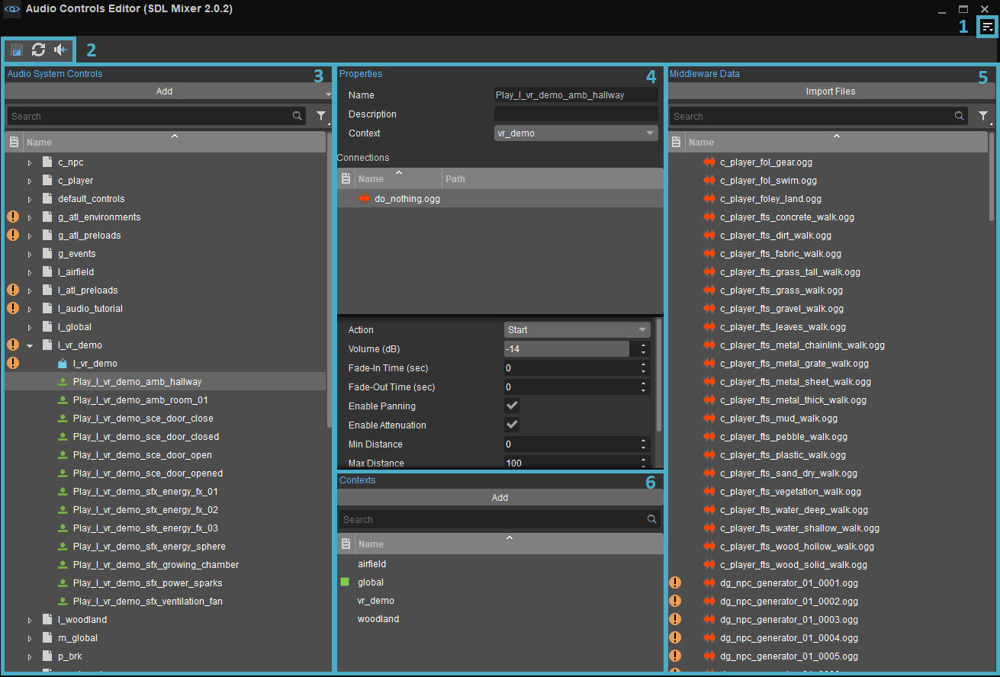
В редакторе элементов управления звуком используются такие значки, как
1. Строка меню
Открыт
Файл
| Вариант | Описание |
|---|---|
| Сохранить | Сохраняет все изменения, внесенные в ACE. |
Редактировать
Вариант | Описание |
|---|---|
| Перезагрузить | Перезагружает файлы ACE и промежуточного программного обеспечения, отменяя все несохраненные изменения, внесенные в элементы управления аудиосистемой. |
| Обновить аудиосистему | Перезагружает SoundBanks, аудиофайлы и сопутствующие аудио. системные данные. |
Предпочтения... | Если выбранное промежуточное программное обеспечение для аудио поддерживает проекты, здесь можно изменить путь к проекту. Пути по умолчанию для ADX2, Wwise и FMOD Studio: аудио/adx2_project, аудио/wwise_project и аудио/fmod_project соответственно. Поскольку SDL Mixer не работает с проектами, это поле нельзя редактировать, если используется реализация промежуточного программного обеспечения SDL Mixer. |
Панели инструментов
| Вариант | Описание | ||||
|---|---|---|---|---|---|
| Настроить | Открывает окно настройки панели инструментов, позволяющее пользователям настраивать существующие панели инструментов и/или создавать новые панели инструментов в ACE. | ||||
| Блокировка панелей инструментов | Если этот параметр отключен, положения панелей инструментов и разделителей внутри ACE можно изменить путем перетаскивания. | ||||
| Проставки | Следующие параметры позволяют пользователям использовать разделители при позиционировании панелей инструментов.
Проставки Опции меню доступны только тогда, когда Панели инструментов → Заблокировать панели инструментов отключен. | ||||
| Панели инструментов | Перечисляет все стандартные и пользовательские панели инструментов, созданные для ACE, что позволяет пользователям выбирать, какую панель инструментов они хотят скрыть или отобразить. По умолчанию доступна только следующая панель инструментов:
|
Если у инструмента есть панель инструментов, будь то панель по умолчанию или пользовательская, приведенные выше параметры также доступны при щелчке правой кнопкой мыши в области панели инструментов (только если панель инструментов уже отображается).
Окно
Вариант | Описание |
|---|---|
Панели | Содержит Органы управления аудиосистемой, Контексты, Данные промежуточного программного обеспечения и Свойства параметры, позволяющие пользователям добавлять эти панели в ACE, если они еще не были включены. |
Сбросить макет | Восстанавливает макет по умолчанию для ACE. |
Помощь
| Вариант | Описание |
|---|---|
| Перейти к документации... | Открывает страницу документации для этого инструмента. |
2. Кнопки «Сохранить», «Перезагрузить» и «Обновить».
Кнопка | Имя | Описание |
|---|---|---|
Сохранить все изменения | Сохраняет все изменения, внесенные в ACE. | |
Перезагрузите все ACE и промежуточное программное обеспечение. файлы | Перезагружает файлы ACE и промежуточного программного обеспечения, отменяя все несохраненные изменения, внесенные в элементы управления аудиосистемой. | |
Обновить аудиосистему | Перезагружает SoundBanks, аудиофайлы и сопутствующие аудио. системные данные. |
3. Органы управления аудиосистемой
На панели «Элементы управления аудиосистемой» перечислены все элементы управления, включенные в текущий проект CRYENGINE.
Он также позволяет пользователям создавать, перемещать и удалять каждый из различных типов доступных элементов управления. Элементы управления также можно сгруппировать в папки, что может быть полезно при организации более крупных проектов.
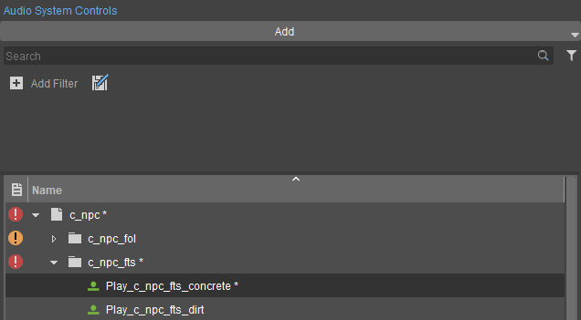
Панель управления аудиосистемой
Типы управления
| Тип управления | Значок | Описание |
|---|---|---|
| Триггеры | Триггеры — это контейнеры, которые выполняют связанные с ними события промежуточного программного обеспечения аудио. С триггером может быть связано любое количество событий. | |
| Параметры | 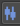 | Параметры в элементах управления аудиосистемой представляют собой значения с плавающей запятой, которые напрямую влияют на значения подключенных параметров в промежуточном программном обеспечении. |
| Переключатели | 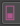 | Коммутатор — это набор состояний, каждое из которых определенным образом манипулирует подключенными параметрами промежуточного программного обеспечения. Примером часто используемого переключателя может служить переключатель для шагов персонажа, который воспроизводит разные звуки шагов в зависимости от поверхности (бетон, трава и т. д.). |
| Окружающая среда | 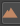 | Окружение используется для управления такими эффектами, как реверберация и отражения оружия, в таких областях, как AreaBox, AreaShape, AreaSphere или AreaSolid, которые находятся под Площадь вариант Создать объект инструмент. |
| Предварительная загрузка | Предварительная загрузка — это запросы на загрузку определенных аудиофайлов (например, SoundBanks в реализации FMOD Studio) в память. Любое количество файлов можно сгруппировать в один запрос предварительной загрузки. | |
| Настройки | Настройки используются для загрузки или выгрузки конкретных настроек промежуточного программного обеспечения (например, настроек шины DSP в реализации ADX2). В реализации ADX2 загрузка настройки в ACE применяет подключенную настройку шины DSP в ADX2, а выгрузка ее в ACE удаляет настройку шины DSP. Одновременно может быть активна только одна настройка шины DSP. | |
| Папки | Папки используются только для структурирования элементов управления аудиосистемой в ACE и не имеют никаких связанных с ними функций. |
Звездочка напротив триггера, параметра или переключателя на панели управления аудиосистемой указывает на несохраненные изменения, внесенные в этот элемент. Папки и библиотеки, расположенные выше в иерархии, к которым принадлежит несохраненный триггер/параметр/переключатель, также будут отмечены звездочкой.
Добавление элементов управления/папок/библиотек/состояний
Нажав на Добавить Кнопка в верхней части панели управления аудиосистемой позволяет пользователям добавлять новые библиотеки, папки, триггеры, параметры, переключатели, состояния, среды или запросы предварительной загрузки в качестве дочерних элементов элемента, выбранного в данный момент на панели управления аудиосистемой.
Если на панели управления звуком не выбран ни один элемент, Добавить Кнопка создает желаемую библиотеку/папку/триггер/параметр/переключатель/среду/запрос предварительной загрузки в корне иерархии папок.
Добавить Меню предоставляет параметры только для тех элементов, которые можно добавить в качестве дочерних элементов текущей выбранной библиотеки, папки, триггера, параметра или переключателя на панели управления аудиосистемой.
Например, состояния можно добавлять только к коммутаторам. Это можно сделать, нажав кнопку Добавить кнопку, щелкнув правой кнопкой мыши переключатель или перетащив параметр промежуточного программного обеспечения или VCA на коммутатор.
Альтернативно, щелчок правой кнопкой мыши по элементу на панели «Элементы управления аудиосистемой» открывает контекстное меню с теми же параметрами, что и в панели управления аудиосистемой. Добавить кнопка.
Панель поиска
Позволяет выполнять поиск на панели элементов управления аудиосистемой на основе строки символов, отображая только те элементы управления, имена которых содержат строку, введенную в строке поиска.
Фильтры
Нажав на Добавить критерий кнопка представляет раскрывающееся меню, содержащее доступные критерии, по которым элементы управления или папки могут быть перечислены на панели панели управления аудиосистемой; в зависимости от выбранного критерия его значение можно выбрать из отдельного раскрывающегося списка, установить с помощью флажка «Истина/Ложь» или пустого поля значения.
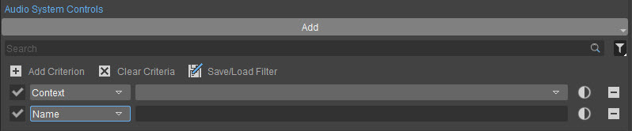
Добавить критерий
Нажав на 
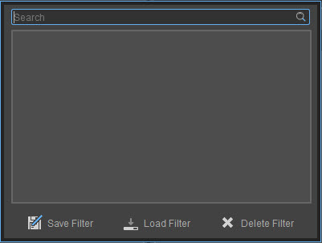
Щелчок правой кнопкой мыши по кнопке фильтра также позволяет быстро выбрать сохраненный фильтр вместо использования Сохранить/Загрузить фильтр диалог.
Элементы управления звуком можно фильтровать по значениям их Тип, Действительное соединение, В упаковке, На диске, Контекст и Имя свойства.
Недвижимость | Описание |
|---|---|
Тип | Звуковое управление может быть следующим: Типы: Триггер, параметр, переключатель, состояние, настройка, среда или предварительная нагрузка. Это свойство указывает тип элемента управления звуком, указанный на панели «Элементы управления аудиосистемой». |
Действительное соединение | Указывает, имеет ли элемент управления аудиосистемой в ACE соединение с элементом управления в загруженном проекте промежуточного программного обеспечения или нет. Обратите внимание, что проекты поддерживаются только промежуточным программным обеспечением FMOD Studio и Wwise. |
В упаковке | Указывает, принадлежит ли элемент управления звуком к библиотеке, которая существует как .pak файл в каталоге ресурсов проекта или нет. |
На диске | Указывает, принадлежит ли элемент управления звуком к библиотеке, существующей на диске, или нет. |
Контекст | Указывает, принадлежит ли элемент управления звуком глобальный или определяемый пользователем контекст; в случае пользовательского контекста имя контекста будет отображаться в этом поле свойства. |
Имя | Указывает имя, данное элементу управления звуком. |
Контекстное меню
Щелчок правой кнопкой мыши по заголовку столбца или определенному элементу в элементах управления аудиосистемой открывает контекстное меню; Параметры этого контекстного меню могут различаться в зависимости от выбранного элемента.
Вариант | Описание |
|---|---|
Загрузить запрос глобальной предварительной загрузки | Эта опция отображается только в том случае, если выбранный элемент управления звуком является запросом предварительной загрузки в активном в данный момент контексте, и тот Автозагрузка на панели «Свойства» флажок снят. Он вручную загружает все SoundBanks, подключенные к запросу предварительной загрузки. |
Выгрузить запрос глобальной предварительной загрузки | Эта опция отображается только в том случае, если выбранный элемент управления звуком является запросом предварительной загрузки в активном в данный момент контексте, и тот Автозагрузка на панели «Свойства» флажок снят. Он вручную выгружает все SoundBanks, подключенные к запросу предварительной загрузки. |
| Загрузить настройки | Применяет настройку промежуточного программного обеспечения, связанную с выбранной настройкой аудиосистемы. В реализации аудиосистемы ADX2 пользователи могут переключаться между настройками шины DSP, просто загружая нужную настройку аудиосистемы с помощью Загрузить настройки вариант; старая настройка аудиосистемы автоматически выгружается. |
| Выгрузить настройки | Удаляет специальную настройку промежуточного программного обеспечения, связанную с выбранной настройкой аудиосистемы. |
Выполнить триггер | Появляется только в том случае, если выбранный элемент управления звуком является триггером. Эта опция запускает триггер, вызываемый щелчком правой кнопкой мыши, для воспроизведения подключенного к нему элемента управления промежуточного программного обеспечения. Элементы управления промежуточного программного обеспечения, связанные с выбранным элементом управления аудиосистемой, можно найти в разделе Соединения раздел Свойства панель. Триггер также можно запустить, щелкнув по нему double или нажав клавишу пробела, когда он выделен. |
Добавить | Позволяет пользователям добавлять новые библиотеки, папки, триггеры, параметры, переключатели, состояния или запросы предварительной загрузки в качестве дочерних элементов элемента, выбранного в данный момент на панели управления аудиосистемой. Если на панели управления звуком не выбран ни один элемент, Добавить Кнопка создает нужную библиотеку/папку/триггер/параметр/переключатель в корне иерархии папок. Добавить Меню предоставляет параметры только для тех элементов, которые можно добавить в качестве дочерних элементов текущей выбранной библиотеки, папки, триггера, параметра или переключателя на панели управления аудиосистемой. Кроме того, элементы можно также добавить на панель управления аудиосистемой, щелкнув значок Добавить кнопку вверху. |
Показать в проводнике | Открывает проводник для поиска библиотеки на диске. Этот параметр отображается только при щелчке правой кнопкой мыши по библиотекам, существующим на диске. Оно недоступно для тех, кто сохранен в .pak файлы в каталоге ресурсов проекта или во вновь созданные библиотеки, которые не были сохранены, нажав кнопку |
Переименовать | Позволяет пользователям изменять имя выбранного в данный момент элемента управления. Обратите внимание, что элементы управления звуком в default_controls папку нельзя переименовать. Альтернативно, выбранный элемент управления/папку на панели элементов управления аудиосистемой можно переименовать, нажав кнопку Ф2 ключ. |
Удалить | Удаляет выбранный элемент управления с панели управления аудиосистемой. Управление звуком внутри default_controls однако папку нельзя переименовать. Альтернативно, выбранный элемент управления/папку на панели управления аудиосистемой можно удалить, нажав кнопку Удалить ключ. |
Расширить выбор | Разворачивает папку, выбранную на панели «Элементы управления аудиосистемой», для отображения всех подпапок и элементов управления аудиосистемой, содержащихся в ней. |
Свернуть выбор | Сворачивает папку, выбранную на панели «Элементы управления аудиосистемой», чтобы скрыть все вложенные папки и элементы управления аудиосистемой, содержащиеся в ней. |
Развернуть все | Разворачивает все папки, перечисленные на панели «Элементы управления аудиосистемой», для отображения всех подпапок и элементов управления аудиосистемой, содержащихся в них. |
Свернуть все | Сверните все папки, перечисленные на панели «Элементы управления аудиосистемой», чтобы скрыть все подпапки и элементы управления аудиосистемой, содержащиеся в ней. |
Перемещение, редактирование и предварительный просмотр элементов управления
Органы управления и папки можно перемещать в другие папки, перечисленные на панели управления аудиосистемой, простым перетаскиванием.
Папки и элементы управления нельзя переместить на корневой уровень. Кроме того, предметы нельзя перемещать в или из default_controls библиотека.
Имя, описания и контекст элементов управления аудиосистемой, перечисленных на панели «Элементы управления аудиосистемой», а также свойства элементов управления промежуточного программного обеспечения, подключенных к этим элементам управления аудиосистемой, можно изменить с помощью Свойства панель.
Имя элемента управления аудиосистемой может существовать только один раз для каждого типа элемента управления. Аналогично, имя состояния может существовать только один раз для каждого коммутатора.
Например, аудиотриггер с именем my_trigger не может быть создан, если в проекте уже существует триггер с таким же именем. ACE обеспечит это, переименовывая все созданные впоследствии триггеры с совпадающими именами как my_trigger2, my_trigger3 и так далее.
Если элемент управления промежуточного программного обеспечения подключен к триггеру на панели «Элементы управления аудиосистемой», триггер аудио можно просмотреть на панели «Элементы управления аудиосистемой», щелкнув его правой кнопкой мыши и выбрав значок Выполнить триггер вариант, нажав double или нажав кнопку пробел на выбранном триггере.
Аналогично, элементы управления промежуточного программного обеспечения, подключенные к аудио-триггеру, также можно просмотреть на панели «Свойства», щелкнув правой кнопкой мыши подключенный элемент управления промежуточного программного обеспечения в разделе «Соединения» и выбрав Выполнить соединение вариант, нажав double или нажав кнопку пробел на нем при выборе.
Выполняемые триггеры остановятся после отмены выбора.
Элементы управления по умолчанию
Аудиосистема CRYENGINE содержит несколько элементов управления звуком по умолчанию. Тип Триггер, который создается автоматически при его отсутствии.
Эти элементы управления являются общими, жестко запрограммированы и применяются к любому проекту независимо от его характера. Обязательно подключите эти элементы управления к соответствующему представлению промежуточного программного обеспечения аудио, чтобы создать функционирующую производственную среду.
Все элементы управления по умолчанию хранятся в папке default_controls библиотеку, и ее нельзя удалить, переименовать или переместить. В эту библиотеку нельзя добавить и другие элементы управления звуком.
Триггеры
Триггер | Описание |
|---|---|
get_focus | Отправляется, когда окно приложения находится в фокусе. Автоматически включает все звуки в ADX2, FMOD Studio и SDL Mixer. В Wwise его необходимо подключить к включить все звуки событие. |
lose_focus | Отправляется, когда окно приложения не в фокусе. Автоматически отключает все звуки в ADX2, FMOD Studio и SDL Mixer. В Wwise его необходимо подключить к отключить все звуки событие. |
mute_all | Отправлено пользователем Sandbox Отключить звук кнопку, если звук еще не отключен. Автоматически отключает все звуки в ADX2, FMOD Studio и SDL Mixer. В Wwise его необходимо подключить к отключить все звуки событие. |
unmute_all | Отправлено пользователем Sandbox Отключить звук кнопка, если mute_all был отправлен заранее. Автоматически включает все звуки в ADX2, FMOD Studio и SDL Mixer. В Wwise его необходимо подключить к включить все звуки событие. |
pause_all | Автоматически приостанавливает все звуки в ADX2, FMOD Studio и SDL Mixer. В Wwise его необходимо подключить к приостановить все событие. |
resume_all | Автоматически возобновляет все приостановленные звуки в ADX2, FMOD Studio и SDL Mixer. В Wwise его необходимо подключить к возобновить все событие. |
do_nothing | Переопределяет автоматическую остановку экземпляров StartTrigger, применяя ее к свойству StopTrigger. Не отображается в ACE, только в Селектор ресурсов, потому что его не следует редактировать. Обратите внимание, что подключение любого из вышеперечисленных триггеров в ACE приведет к тому, что override будет работать по умолчанию. |
4. Панель свойств
Свойства элементов управления, выбранных на панели «Элементы управления аудиосистемой», можно редактировать на панели «Свойства».
На панели «Свойства» также можно установить соединения между элементами управления промежуточного программного обеспечения аудио и элементами управления, перечисленными на панели «Элементы управления аудиосистемой».
Свойства
Верхняя половина панели «Свойства» содержит параметры для редактирования Имя, Описание и Контекст элементов управления, выбранных на панели управления аудиосистемой.
Недвижимость | Описание |
|---|---|
Имя | Имя элемента управления. Это также можно редактировать на панели управления аудиосистемой. |
Описание | Здесь вы можете ввести описание short элемента управления аудиосистемой. Это также появится при наведении курсора мыши в Селектор ресурсов. |
Контекст | Раскрывающееся меню, содержащее все определяемые пользователем контексты, позволяющее пользователям устанавливать значение элемента управления на глобальный или определяемое пользователем значение. Пожалуйста, обратитесь к Панель контекстов раздел для получения дополнительной информации об управлении контекстами. Поскольку контекст элементов управления по умолчанию глобальный по умолчанию, Контекст Свойство скрыто, когда выбран элемент управления по умолчанию. Кроме того, состояния переключателя не имеют контекста; они наследуют контексты своего родительского коммутатора. |
Автозагрузка | Доступно только для запросов на предварительную загрузку.
|
Соединения
Чтобы создать новые соединения между элементами управления аудиосистемой и элементами управления промежуточного программного обеспечения аудио, просто перетащите элемент управления промежуточного программного обеспечения с панели «Данные промежуточного программного обеспечения аудио» в раздел «Соединения» на панели «Свойства».
Элемент управления промежуточным программным обеспечением звука также можно перетащить непосредственно на панель управления аудиосистемой. Это создаст совместимый элемент управления аудиосистемой с именем элемента управления промежуточного программного обеспечения аудио, автоматически устанавливая соединение между ними.
В разделе «Подключения» панели «Свойства» перечислены все элементы управления промежуточного программного обеспечения, которые в данный момент подключены к элементу управления аудиосистемой, указанному в разделе «Элементы управления аудиосистемой». панель. Выбор подключенного элемента управления промежуточного программного обеспечения, указанного в разделе Соединения раздел Свойства Панель предоставляет дополнительные свойства, которые можно редактировать на панели «Свойства».
ТЭти свойства различаются в зависимости от используемого промежуточного программного обеспечения аудио, типа выбранного элемента управления промежуточного программного обеспечения и типа элемента управления аудиосистемой, к которому оно подключено.
ADX2
При подключении ADX2 Cue к аудио триггеру доступны следующие опции.
Вариант | Описание |
|---|---|
Действие |
|
При подключении снимка ADX2 к аудио-триггеру доступны следующие параметры.
Вариант | Описание |
|---|---|
Действие |
|
| Время переключения | Продолжительность времени в миллисекундах, необходимая для изменения значения снимка. |
При подключении ADX2 AISAC — переменной управления, категории или игры к параметру аудиосистемы доступны следующие параметры.
| Вариант | Описание | ||||||||||||
|---|---|---|---|---|---|---|---|---|---|---|---|---|---|
| Расширенный | Если этот флажок установлен, становятся доступными следующие параметры.
|
Поскольку ADX2 использует значения от 0 до 1 для всех типов параметров, Минимальное значение и Макс. значение Свойства упрощают пользователям нормализацию значений параметров.
Например, в случае время суток параметр со значениями от 0 до 24, устанавливающий Макс. значение значение 24 нормализует его в коде до 1, прежде чем оно будет передано в ADX2. Что означает, время суток значение 12 будет соответствовать нормализованному значению 0,5 в коде и так далее.
При подключении AISAC — Control к среде аудиосистемы в ACE доступны следующие параметры.
| Вариант | Описание | ||||||||
|---|---|---|---|---|---|---|---|---|---|
| Расширенный | Если этот флажок установлен, становятся доступными следующие параметры.
|
При подключении AISAC — переменной управления, категории или игры к состоянию аудио в ACE доступны следующие параметры.
Вариант | Описание |
|---|---|
Значение | Значение, которое необходимо установить для подключенного элемента управления ADX2, когда состояние активировано; ограничено между 0 и 1. |
SDL Микшер
При подключенииаудио триггер к аудиофайл, доступны следующие варианты.
Вариант | Описание | ||||||
|---|---|---|---|---|---|---|---|
Действие |
| ||||||
Громкость (dB) | Максимальная громкость, на которой будет воспроизводиться звук без приглушения. | ||||||
Время плавного появления (сек) | Время появления в секундах. | ||||||
Время затухания (сек) | Время исчезновения в секундах. Используется, когда событие остановлено. | ||||||
Включить панорамирование | Позволяет воспроизводить аудиофайл в трехмерном пространстве, чтобы он панорамировался между динамиками в зависимости от направления, в котором смотрит игрок. | ||||||
| Включить затухание | Установка этого флажка делает доступными следующие опции:
| ||||||
| Бесконечный цикл | Зацикливает звук бесконечно, если он находится на максимальном расстоянии, на котором воспроизводится звук. | ||||||
| Количество циклов | Если флажок «Бесконечно» не установлен, появится эта опция. Это количество раз, которое воспроизводится звук при выполнении триггера. |
При подключении Параметры управления аудиосистемой к аудиофайл, доступны следующие варианты.
| Вариант | Описание | ||||||||
|---|---|---|---|---|---|---|---|---|---|
| Расширенный | Если этот флажок установлен, становятся доступными следующие параметры.
|
При подключении Состояние органов управления аудиосистемой к аудиофайл, доступен следующий вариант.
Вариант | Описание |
|---|---|
Объем (нормированный) | Подключенное событие будет установлено на этот том. Он зажат между 0 а 1. |
При использовании реализации микшера SDL параметры и переключатели/состояния могут управлять только громкостью аудиособытий. Значения параметров и состояний представляют собой нормированные объемы (0–1).
0 = тихо (-96dB)
1 = громкость, которая задается при соединении событий триггера со стартовым действием.
Установка параметра выше, чем 1 не будет увеличивать громкость сверх значения, установленного в триггерном соединении. Параметры и переключатели/состояния устанавливаются для каждого объекта и влияют на все триггеры, которые используют один и тот же актив на этом объекте.
При подключении аудиофайла к запросу предварительной загрузки элементов управления аудиосистемой подключенный файл будет загружаться в память каждый раз при загрузке предварительной загрузки. Аудиофайлы, не подключенные к предварительной загрузке, загружаются по требованию.
Wwise
При подключении Параметры управления аудиосистемой к Wwise Параметр, доступны следующие варианты:
| Вариант | Описание | ||||||||
|---|---|---|---|---|---|---|---|---|---|
| Расширенный | Если этот флажок установлен, становятся доступными следующие параметры.
|
При подключении Состояние органов управления аудиосистемой к Wwise Параметр, доступны следующие варианты.
Вариант | Описание |
|---|---|
Значение | Значение, которое будет присвоено параметру Wwise, когда состояние активировано. |
FMOD Студия
При подключении Государство к Параметр FMOD или FMOD VCA, доступны следующие варианты.
Вариант | Описание |
|---|---|
Значение | Значение для установки в канун FMODnt или FMOD VCA когда состояние активировано. |
При подключении параметра управления аудиосистемой к параметру FMOD или FMOD VCA, следующие параметры доступнынеспособен:
| Вариант | Описание | ||||||||
|---|---|---|---|---|---|---|---|---|---|
| Расширенный | Если этот флажок установлен, становятся доступными следующие параметры.
|
При подключении Аудио триггер к FMOD Событие, доступны следующие варианты:
Вариант | Описание |
|---|---|
Действие |
|
При подключении Аудио триггер к FMOD Снимок, доступны следующие варианты:
Вариант | Описание |
|---|---|
Действие |
|
Контекстное меню
Щелкните правой кнопкой мыши элемент управления промежуточного программного обеспечения подключенного аудио, указанный в разделе «Подключения» Панель «Свойства» предоставляет следующие параметры.
Вариант | Описание |
|---|---|
| Выполнить соединение | Воспроизводит выбранный элемент управления промежуточного программного обеспечения. |
Удалить соединение | Отключает этот элемент управления промежуточного программного обеспечения от элемента управления аудиосистемой. |
Выберите в данных промежуточного программного обеспечения | Выбирает элемент управления промежуточного программного обеспечения на панели «Данные промежуточного программного обеспечения». |
| Импортировать файлы | Открывает проводник, позволяющий пользователям находить и импортировать аудиофайлы с диска в каталог ресурсов микшера SDL проекта. Пожалуйста, обратитесь к Импортировать файлы раздел этой страницы для получения дополнительной информации об импорте. |
5. Панель данных промежуточного программного обеспечения
На панели «Элементы управления промежуточным программным обеспечением аудио» отображается список всех доступных элементов управления промежуточного программного обеспечения аудио, которые можно подключить к текущему выбранному элементу управления на панели «Элементы управления аудиосистемой».
Пользователи могут переключаться между SDL Mixer, FMOD Studio и промежуточным программным обеспечением Wwise с помощью s_ImplName Cvar в консоли.
s_ImplName = CryAudioImplSDLMixerдля микшера SDL (это промежуточное ПО по умолчанию)s_ImplName = CryAudioImplFmodдля студии FMODs_ImplName = CryAudioImplWwiseдля WWises_ImplName = CryAudioImplAdx2для ADX2
Дополнительные сведения о реализациях промежуточного программного обеспечения для звука см. эта страница.
В случае опечатки при переключении между промежуточным ПО с помощью s_ImplName CVar, или если не загружено допустимое промежуточное ПО, UI ACE будет отключено.
«Предупреждение: реализация промежуточного программного обеспечения запрещена!» предупреждение будет отображаться в правом верхнем углу ACE.
Импортировать файлы
Импортировать файлы Кнопка появляется в верхней части панели данных промежуточного программного обеспечения только тогда, когда используется промежуточное программное обеспечение SDL Mixer.
При нажатии на него открывается проводник, позволяющий пользователям находить и импортировать аудиофайлы с диска в каталог ресурсов Mixer SDL проекта. Выбрав необходимые аудиофайлы и нажав кнопку Открыть Кнопка в этом файловом проводнике открывает окно импорта аудиофайлов.
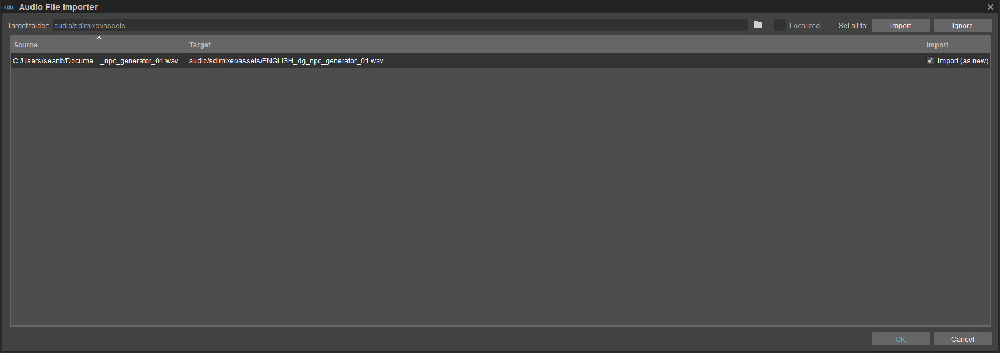
Импортер аудиофайлов
Импортер аудиофайлов перечисляет аудиофайлы, выбранные для импорта, а также их исходные и целевые места назначения.
По умолчанию все импортированные аудиофайлы сохраняются в папке аудио/sdlmixer/активы папка каталога ресурсов проекта. Эту целевую папку можно изменить, щелкнув значок
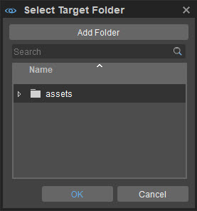
Выберите целевую папку
Новые папки можно создавать внутри аудио/sdlmixer/активы через Добавить папку кнопка. Кроме того, проверка Локализованный флажок рядом с
При этом целевая папка автоматически изменится на локализация папка каталога проекта. Дополнительную информацию об импорте локализованных аудиофайлов в реализацию звука на основе SDL от CRYENGINE можно найти на странице SDL Микшер и локализация страница.
Импорт В то же время столбец импортера аудиофайлов содержит флажки для каждого перечисленного аудиофайла, что позволяет пользователям вручную указывать, должен ли указанный аудиофайл быть импортирован или нет. Эти флажки могут принимать следующие значения.
Вариант | Описание |
|---|---|
Импортировать (как новый) | Указывает, что аудиофайл еще не существует в целевой папке. Если этот флажок установлен, он будет импортирован как новый файл. |
Импорт (в качестве замены) | Указывает, что аудиофайл с тем же именем, что и текущий аудиофайл в списке, уже существует в целевой папке. Если этот флажок установлен, указанный аудиофайл заменит существующий файл при импорте. |
Импорт и игнорировать варианты Установить все на поле в правом верхнем углу окна импорта аудиофайлов установит/снимет флажок Импорт флажки всех перечисленных аудиофайлов оптом.
Нажав на OK Кнопка в правом нижнем углу окна импорта аудиофайлов завершает операцию импорта.
Фильтры
Элементы управления промежуточного программного обеспечения можно фильтровать по значениям их Подключено, В упаковке, На диске, Локализованный и Имя свойства.
Недвижимость | Описание |
|---|---|
Подключено | Указывает, имеет ли элемент управления промежуточного программного обеспечения соединение с элементом управления аудиосистемой (триггер/параметр/переключатель), указанным на панели элементов управления аудиосистемой. |
В упаковке | Указывает, принадлежит ли элемент управления промежуточного программного обеспечения библиотеке, которая существует как .pak файл в каталоге ресурсов проекта или нет. |
На диске | Указывает, принадлежит ли элемент управления промежуточного программного обеспечения библиотеке, существующей на диске, или нет. |
Локализованный | Указывает, локализован ли аудиофайл управления промежуточным программным обеспечением. Локализованные аудиофайлы обозначаются |
Имя | Указывает имя, присвоенное элементу управления промежуточного программного обеспечения. |
Пожалуйста, обратитесь к Фильтры подраздел панели «Элементы управления аудиосистемой», приведенной выше, для понимания реализации и использования фильтров.
Контекстное меню
В зависимости от настройки промежуточного программного обеспечения параметры, которые появляются при щелчке правой кнопкой мыши по папке или элементу управления промежуточного программного обеспечения на панели «Данные промежуточного программного обеспечения», могут различаться.
Вариант | Описание |
|---|---|
Воспроизвести событие/вызов | Предварительный просмотр звука события/сигнала ADX2, выбранного на панели данных промежуточного программного обеспечения. Альтернативно события/сигналы можно просмотреть, нажав double на их списки или нажав клавишу пробела на панели данных.
|
Соединения | Отображает список элементов управления аудиосистемой, к которым подключен выбранный элемент управления промежуточного программного обеспечения; выбор элемента управления аудиосистемой открывает его в Свойства панель |
Показать в проводнике | Открывает проводник для поиска выбранного элемента управления промежуточного программного обеспечения на диске. Этот параметр отображается только при щелчке правой кнопкой мыши по элементам управления промежуточного программного обеспечения, существующим на диске. |
Расширить выбор | Разворачивает выбранные элементы. |
Свернуть выбор | Сворачивает выбранные элементы. |
Развернуть все | Раскрывает все предметы. |
Свернуть все | Свернуть все элементы. |
Импортировать файлы | Открывает проводник, позволяющий пользователям находить и импортировать аудиофайлы с диска в каталог ресурсов микшера SDL проекта. Пожалуйста, обратитесь к Импортировать файлы раздел этой страницы для получения дополнительной информации об импорте. |
6. Панель контекстов
Элемент управления аудиосистемой может существовать либо в Глобальный или определяемый пользователем Контекст.
Элемент управления с Глобальный Контекст будет существовать как long во время работы игры, независимо от того, используется ли элемент управления на текущем уровне или нет. Элемент управления с определяемый пользователем контекст, однако, будет существовать только тогда, когда этот контекст активирован. Контексты можно создавать, активировать и деактивировать с помощью панели «Контексты».
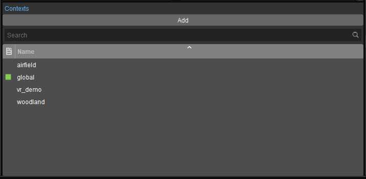
Контексты
Добавление, переименование и удаление контекстов
глобальный Контекст нельзя активировать, деактивировать, удалить или переименовать. Нажав на Добавить кнопка в верхней части панели «Контексты» создает новый контекст; все контексты перечислены на панели «Контекст» в алфавитном порядке.
Созданные контексты можно переименовать или удалить, щелкнув их правой кнопкой мыши и выбрав значок Переименовать или Удалить опции из контекстного меню.
Если Контекст имеет то же имя, что и уровень, включенный в проект, Контекст и его элементы управления будут автоматически загружены/выгружены с этим уровнем.
Активация и деактивация контекстов
Активация/деактивация контекста загружает/выгружает все элементы управления аудиосистемой, содержащиеся в нем.
Контексты можно активировать/деактивировать, щелкнув их правой кнопкой мыши и выбрав Активировать/Деактивировать вариант соответственно. Активный контекст идентифицируется
Активировать и деактивировать контексты, имена которых не совпадают с существующим уровнем, также можно выполнить с помощью код.
Одновременно можно активировать несколько контекстов. Эти контексты не привязаны к уровням, и каждый уровень может иметь несколько контекстов. Например, на уровне могут использоваться отдельные контексты для воспроизведения определенных звуков в разных режимах игры (одиночная игра, многопользовательский бой насмерть, захват флага и т. д.).
Селекторы ресурсов
Когда вы щелкаете селектор ресурсов, для которого требуется элемент управления аудиосистемой, например, когда вы добавляете компонент триггера к объекту, открывается окно, в котором вы можете выбрать элемент управления аудиосистемой по своему усмотрению:
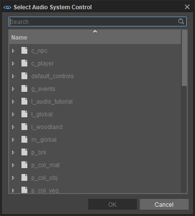
Панель поиска
Это работает так же, как и другие панели поиска, поэтому ввод чего-либо здесь будет фильтровать элементы управления аудиосистемой и показывать только те, в названии которых есть определенная комбинация букв и символов.
Контекстное меню
Щелчок правой кнопкой мыши по папке или элементу управления аудиосистемой предоставит вам следующие возможности:
Вариант | Описание |
|---|---|
Выполнить триггер | Выполняет триггер, по которому вы щелкнули правой кнопкой мыши (доступно только при нажатии на «Триггеры»). |
Расширить выбор | Разворачивает выбранные элементы. |
Свернуть выбор | Сворачивает выбранные элементы. |
Развернуть все | Раскрывает все предметы. |
Свернуть все | Свернуть все элементы. |
Опытные пользователи
Обработка данных
Данные по элементам управления аудиосистемой можно найти в .xml файлы в папке ...<Проект>\audio\<промежуточное ПО>\ace.
Каждый .xml представляет собой аудиобиблиотеку (элемент верхнего уровня) на панели «Элементы управления аудиосистемой» (папки указываются внутри файла). .xml файлы). Файлы, расположенные в корне ace, рассматриваются и обрабатываются как файлы, предоставляющие данные для глобального контекста данных.
Однако файлы под ...<Проект>\audio\<промежуточное ПО>\ace\contexts\ рассматриваются и обрабатываются как файлы, содержащие данные для контекстов конкретного уровня.
В некотором смысле эти .xml файлы можно понимать как рабочие единицы. Вы можете распределить свои данные по любому количеству файлов или поместить все свои аудиоданные в один файл, однако это, скорее всего, приведет к конфликтам контроля версий, особенно если несколько человек вносят свой вклад в работу со звуком на этом уровне. Поэтому мы советуем распространять данные, но это зависит от размера проекта.
Руководство по миграции
Изменения в версии 5.6
В выпуске 5.6 области действия были заменены контекстами в ACE.
Контексты функционируют аналогично областям в том, что они загружают запросы предварительной загрузки и назначенные им элементы управления аудиосистемой. Однако, в отличие от областей, контексты не привязаны к уровням.
При обновлении старых выпусков CRYENGINE до версии 5.6 и более поздних обратите внимание:
- Все библиотеки, которые ранее были привязаны к неглобальной области, будут отмечены звездочкой в ACE, указывающей на несохраненные изменения. Нажмите кнопку
значок, чтобы сохранить библиотеки в соответствующих контекстах. - <Проект>\аудио\<промежуточное ПО>\туз\уровни папка переименована в Проект>\аудио\<промежуточное ПО>\ace\contexts.
Изменения в версии 5.5
Начиная с версии 5.5, файлы ACE будут сохраняться в папке, специфичной для промежуточного программного обеспечения, поэтому каждая реализация промежуточного программного обеспечения полностью отделена друг от друга.
1. Создайте папку под названием «assets» внутри текущего аудио/<промежуточное ПО> папка.
2. Переместите все SoundBanks и аудиофайлы из папки промежуточного программного обеспечения в новую подпапку «assets». Например:
- audio/wwise в audio/wwise/assets
- audio/fmod в audio/fmod/assets
- audio/sdlmixer в audio/sdlmixer/assets
Сделайте то же самое для локализованного SoundBanks, если таковой имеется. Например:
локализация/английский/аудио/wwise чтобы локализация/английский/аудио/wwise/активы
3. Резервное копирование всего .xml файлы аудио/туз папка.
4. Снимите защиту от записи со всех XML-файлов внутри аудио/туз папка.
5. Удалить все .xml файлы из .pak файлы (обычно внутри аудио.пак).
6. Запустите Sandbox и откройте редактор управления звуком из Инструменты меню.
7. Все аудиобиблиотеки теперь должны быть помечены как измененные. Нажмите кнопку Сохранить все кнопку в редакторе элементов управления звуком.
8. Если проект содержит запросы на предварительную загрузку, появится диалоговое окно с запросом на перезагрузку аудиосистемы. Пресса Да.
На этом миграция завершена.
Для очистки удалите старый аудио/туз папка. Если он содержит .cryasset файлы, их также можно удалить.
Если ACE .xml файлы пишутся-protected они не будут автоматически удалены во время миграции и впоследствии должны быть удалены вручную, в противном случае они будут анализироваться заново каждый раз при запуске Sandbox или открытии редактора элементов управления звуком, что увеличит время загрузки.
В зависимости от проекта, возможно, также потребуется обновить пути элементов управления исходным кодом и сгенерированные пути SoundBank внутри промежуточного программного обеспечения. Аудиофайлы загружаются из audio/<промежуточное ПО>/assets папка и соответствующие папки локализации localization/<язык>/audio/<промежуточное ПО>/assets.
XML-файлы ACE загружаются из audio/<middleware>/ace папка.